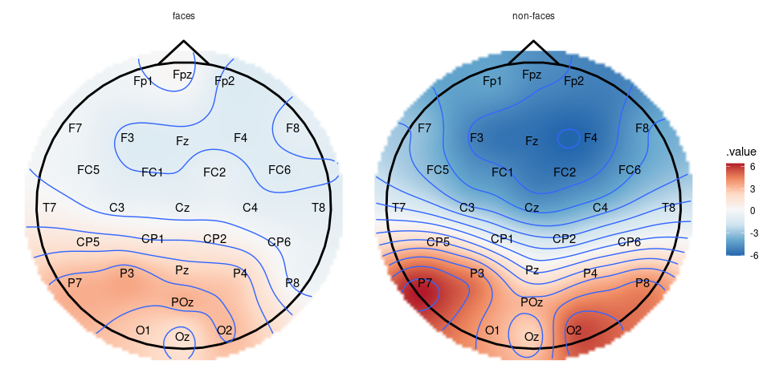

Overview
A package for flexible manipulation of EEG data. eeguana provides a data.table powered framework (through tidytable) for manipulating EEG data with dplyr-like functions (e.g., eeg_mutate, eeg_filter, eeg_summarize) extended to a new class eeg_lst, other EEG-specialized functions, and ggplot wrapper functions. The new class is inspired by tidyverse principles but it’s not really “tidy” (due to space considerations), it’s a list of (i) a wide data table (signal_tbl) that contains the signal amplitudes at every sample point of the EEG, (ii) an events data table with information about markers (or triggers), blinks and other exported information, and (iii) a long table with experimental information, such as participant number (.recording), conditions, etc.
eeguana can do only basic pre-processing for now, more complete packages exist for Matlab (FieldTrip and EEGLAB) and python (MNE).
See Reference for more information about the functions of eeguana.
NOTE: eeg_lst objects created with previous versions of eeguana can be made compatible with the latest version by doing as_eeg_lst(old_obj)
Installation
There is still no released version of eeguana. The package is in the early stages of development, and it will be subject to a lot of changes. To install the latest version from github use:
devtools::install_github("bnicenboim/eeguana")Example
Here, I exemplify the use of eeguana with (pre-processed) EEG data from BrainVision 2.0. The data belong to a simple experiment where a participant was presented 100 faces and 100 assorted images in random order. The task of the experiment was to mentally count the number of faces.
First we download the data:
# Run the following or just download the files from brain_vision folder in https://osf.io/tbwvz/
library(httr)
GET("https://osf.io/q6b7x//?action=download",
write_disk("./faces.vhdr", overwrite = TRUE),
progress()
)
GET("https://osf.io/ft5ge//?action=download",
write_disk("./faces.vmrk", overwrite = TRUE),
progress()
)
GET("https://osf.io/85dgj//?action=download",
write_disk("./faces.dat", overwrite = TRUE),
progress()
)BrainVision 2.0 exports three files: faces.vhdr, faces.vmrk, and faces.dat. The file faces.vhdr contains the metadata and links to the other two files, faces.vmrk contains the triggers and other events in the samples, and faces.dat contains the signals at every sample for every channel recorded.
We first need to read the data:
faces <- read_vhdr("faces.vhdr")
#> # Reading file faces.vhdr...
#> # Data from ./faces.dat was read.
#> # Data from 1 segment(s) and 34 channels was loaded.
#> # Object size in memory 140.5 MbThe function read_vhdr() creates a list with data frames for the signal, events, segments information, and incorporates in its attributes generic EEG information.
faces
#> # EEG data:
#>
#> # Signal table:
#> .id .sample Fp1 Fpz Fp2 F7 F3
#> 1: 1 1 -4.270188 -12.496757 -8.512611 5.8104863 0.7987084
#> 2: 1 2 -5.986778 -11.261559 -8.302858 4.4670320 -0.4558482
#> 3: 1 3 -6.580773 -9.333183 -7.679757 3.7081127 -1.8434987
#> 4: 1 4 -5.896090 -6.184696 -6.079263 3.9488502 -2.6274934
#> 5: 1 5 -5.349657 -2.581047 -3.960115 4.6228004 -2.9634132
#> ---
#> 525203: 1 525203 -19.180754 -14.482754 -11.880928 -3.0353870 -3.5060143
#> 525204: 1 525204 -14.669420 -10.800195 -7.822333 -0.2864416 -2.9062314
#> 525205: 1 525205 -10.086312 -7.376223 -4.007497 2.3745189 -2.2934551
#> 525206: 1 525206 -5.963717 -6.318047 -2.550068 4.0785899 -2.8591332
#> 525207: 1 525207 -2.811746 -9.569276 -5.257495 3.9431772 -4.7773180
#> Fz F4 F8 FC5 FC1 FC2
#> 1: -3.7944875 -7.004565 -9.5905457 -5.5008502 -1.040939 -5.750594
#> 2: -3.9204431 -7.312232 -10.1968956 -8.2559958 -1.625572 -6.205832
#> 3: -3.6854007 -7.325179 -10.5801353 -8.9441166 -2.496611 -6.225702
#> 4: -2.2696950 -6.544898 -10.5005941 -5.3551817 -3.275798 -5.792281
#> 5: -0.1724038 -5.449733 -10.2940083 -0.5347631 -3.816769 -5.539208
#> ---
#> 525203: -5.1268702 -3.885933 1.3387113 -6.0354300 -3.429955 -1.821500
#> 525204: -4.6610451 -3.474034 0.5267539 -5.6796050 -3.269526 -1.967095
#> 525205: -3.9615459 -2.554780 -0.1948199 -5.2791243 -2.709156 -1.333362
#> 525206: -4.5113835 -2.396278 -0.8776174 -5.5155010 -2.732390 -1.006990
#> 525207: -7.2133980 -4.015337 -1.6118808 -7.1379128 -3.719297 -1.199275
#> FC6 M1 T7 C3 Cz C4
#> 1: -9.455340 3.2116241 -2.5749669 -3.198639 -7.162738 -6.0244598
#> 2: -9.701509 1.5566816 -2.1688442 -3.223826 -7.327467 -4.7359419
#> 3: -9.615817 0.4754019 -1.5235398 -4.196370 -7.618096 -3.2705278
#> 4: -8.781445 -0.3485098 -0.1197605 -6.155464 -7.683692 -1.2953618
#> 5: -7.758235 -1.6416440 1.5852079 -8.072474 -7.589663 0.9121451
#> ---
#> 525203: -1.574225 -3.9028225 -9.0984344 -2.281207 -1.244156 -2.6202018
#> 525204: -2.711437 -1.4479842 -8.1386690 -1.984105 -1.888554 -3.1423230
#> 525205: -3.477794 0.6584158 -7.0688133 -1.378137 -2.078016 -2.8522072
#> 525206: -4.265026 2.0143995 -6.4578338 -1.488095 -2.738976 -3.3436871
#> 525207: -6.290535 3.4945364 -7.3460751 -2.911523 -4.274473 -5.8495107
#> T8 M2 CP5 CP1 CP2 CP6
#> 1: -4.771918 -3.2116241 -6.062939 -4.813977 -5.0018249 -8.6002913
#> 2: -3.939853 -1.5566816 -5.505422 -4.283286 -3.9824409 -6.4684544
#> 3: -3.285263 -0.4754019 -5.300730 -4.089828 -2.8778281 -4.4623995
#> 4: -2.399213 0.3485098 -5.378413 -4.206456 -1.4029371 -2.4144411
#> 5: -1.056782 1.6416440 -5.488734 -4.434868 0.3268354 -0.1063155
#> ---
#> 525203: -3.093663 3.9028225 -8.155416 -3.549603 -3.7856157 -1.9837997
#> 525204: -2.935883 1.4479842 -6.898589 -3.393985 -4.0930557 -3.5452051
#> 525205: -3.875237 -0.6584158 -5.362293 -2.832092 -3.8660426 -4.0679202
#> 525206: -4.052106 -2.0143995 -4.340692 -2.890889 -4.3359194 -4.9113569
#> 525207: -4.504183 -3.4945364 -4.906254 -4.134459 -6.3578181 -7.4022784
#> P7 P3 Pz P4 P8 POz
#> 1: -6.72501945 -7.823194 -9.713374 -10.933434 -4.1939182 -13.021215
#> 2: -4.19162369 -6.248482 -8.652735 -8.811299 -2.4914169 -10.943350
#> 3: -1.97165060 -4.997821 -7.685406 -6.668526 -1.0310369 -8.963390
#> 4: -0.09873655 -3.947244 -6.593503 -4.320339 0.6503686 -6.857091
#> 5: 1.68736827 -2.843956 -5.372189 -1.687156 2.8481901 -4.618455
#> ---
#> 525203: -17.43293571 -7.778884 -3.405085 -1.660518 -4.3979721 -7.370723
#> 525204: -14.93541336 -6.817270 -4.063128 -2.827326 -5.3324118 -7.889754
#> 525205: -12.36065578 -5.574656 -4.185033 -3.481713 -6.1155925 -7.927995
#> 525206: -10.60478783 -5.109689 -4.693735 -4.598518 -7.1271410 -8.352034
#> 525207: -11.30642700 -6.548401 -6.205623 -6.893994 -9.2952871 -9.975165
#> O1 Oz O2 EOGV EOGH
#> 1: -7.650791 -8.6958437 -8.901768 36.3205566 20.61859
#> 2: -3.840688 -5.8336391 -6.211349 39.7541809 25.55089
#> 3: -0.550869 -3.2353799 -3.810405 42.1534882 29.02995
#> 4: 2.178792 -0.7047617 -1.321697 44.8317413 30.14127
#> 5: 4.996092 2.2072635 1.650699 49.1988983 29.85255
#> ---
#> 525203: -17.387997 -13.6087084 -10.443031 0.8650103 -12.82597
#> 525204: -15.422725 -14.4835081 -12.536522 -0.9290609 -14.95488
#> 525205: -13.746743 -15.2129507 -14.059873 -1.9016356 -14.81808
#> 525206: -13.172369 -16.1580162 -15.562737 -3.9798355 -12.73059
#> 525207: -14.335607 -17.8692055 -17.643250 -9.1380615 -12.55048
#>
#> # Events table:
#> .id .type .description .initial .final .channel
#> 1: 1 New Segment 1 1 <NA>
#> 2: 1 Bad Interval Bad Min-Max 2158 2895 Fp1
#> 3: 1 Bad Interval Bad Min-Max 2161 2891 Fp2
#> 4: 1 Bad Interval Bad Min-Max 2162 2890 Fpz
#> 5: 1 Bad Interval Bad Min-Max 2173 2861 F8
#> ---
#> 4272: 1 Bad Interval Bad Min-Max 524692 524895 P8
#> 4273: 1 Bad Interval Bad Min-Max 524725 524992 FC5
#> 4274: 1 Bad Interval Bad Min-Max 524777 525122 P7
#> 4275: 1 Bad Interval Bad Min-Max 524983 525155 Cz
#> 4276: 1 Bad Interval Bad Min-Max 525073 525207 O2
#>
#> # Segments table:
#> .id .recording segment
#> 1: 1 faces.vhdr 1Some intervals were marked as “bad” by BrainVision, and so we’ll remove them from the data. We’ll also segment and baseline the data. In this experiment, the trigger “s70” was used for faces and “s71” for no faces. We’ll segment the data using these two triggers.
faces_segs <- faces %>%
eeg_segment(.description %in% c("s70", "s71"),
.lim = c(-.2, .25)
) %>%
eeg_events_to_NA(.type == "Bad Interval") %>%
eeg_baseline()
#> # Total of 200 segments found.
#> # Object size in memory 12.2 Mb after segmentation.We can also edit the segmentation information and add more descriptive labels. Once the eeg_lst is segmented, the segments table includes the relevant columns from the events table (but without the leading dots).
eeguana has wrappers for many dplyr commands for the EEG data. These commands always return an entire eeg_lst object so that they can be piped using magrittr’s pipe, %>%.
## To only see the segments table:
segments_tbl(faces_segs)
#> .id .recording segment type description
#> 1: 1 faces.vhdr 1 Stimulus s70
#> 2: 2 faces.vhdr 2 Stimulus s71
#> 3: 3 faces.vhdr 3 Stimulus s71
#> 4: 4 faces.vhdr 4 Stimulus s71
#> 5: 5 faces.vhdr 5 Stimulus s70
#> ---
#> 196: 196 faces.vhdr 196 Stimulus s71
#> 197: 197 faces.vhdr 197 Stimulus s70
#> 198: 198 faces.vhdr 198 Stimulus s70
#> 199: 199 faces.vhdr 199 Stimulus s70
#> 200: 200 faces.vhdr 200 Stimulus s70
## We modify the entire object:
faces_segs_some <- faces_segs %>%
eeg_mutate(
condition =
ifelse(description == "s70", "faces", "non-faces")
) %>%
eeg_select(-type)
faces_segs_some
#> # EEG data:
#>
#> # Signal table:
#> .id .sample Fp1 Fpz Fp2 F7 F3 Fz
#> 1: 1 -99 3.000602 3.822540 1.676837 5.345215 8.526904 4.730365
#> 2: 1 -98 4.651500 5.966759 2.899244 6.229248 11.957867 6.160355
#> 3: 1 -97 5.636973 7.734169 3.360790 6.146507 12.643122 7.125668
#> 4: 1 -96 4.887103 7.093736 1.560090 4.679008 10.153717 6.335395
#> 5: 1 -95 1.679875 3.586631 -2.115480 1.817395 6.471601 4.633891
#> ---
#> 45196: 200 122 NA NA NA -6.226833 -6.164627 -8.134506
#> 45197: 200 123 NA NA NA -7.609634 -6.624886 -8.577490
#> 45198: 200 124 NA NA NA -8.355278 -7.320350 -8.860150
#> 45199: 200 125 NA NA NA -8.419843 -8.317026 -9.056007
#> 45200: 200 126 NA NA NA -8.219583 -9.290400 -9.426888
#> F4 F8 FC5 FC1 FC2 FC6 M1
#> 1: 3.188497 -0.1089175 -3.644006 7.912477 3.989274 1.272626 0.2677516
#> 2: 3.994015 -0.8760965 1.023301 9.416551 4.667467 3.301379 -0.2832003
#> 3: 4.267825 -2.2046354 7.279726 9.103708 5.293130 3.712586 -0.7368386
#> 4: 3.259394 -3.9267309 10.369022 7.112526 4.947480 1.836436 -0.8240938
#> 5: 1.394350 -5.1243312 10.296667 4.968021 4.046026 -1.199115 -0.6874469
#> ---
#> 45196: -6.909568 -0.8537389 -9.798989 -7.777216 -9.401660 -6.067313 -6.4766435
#> 45197: -7.793821 -0.9486715 -10.705381 -8.119785 -9.315678 -7.353704 -6.6995262
#> 45198: -8.050289 -0.5816752 -11.125468 -8.373542 -9.178003 -8.296130 -6.9813064
#> 45199: -7.632708 0.1328152 -10.956071 -8.740564 -9.007817 -8.350711 -7.0623969
#> 45200: -7.286663 0.5260323 -10.897510 -9.636951 -8.939460 -7.994563 -7.0156692
#> T7 C3 Cz C4 T8 M2
#> 1: -3.057617 10.609308 5.917813 0.8313377 -10.315272 -0.2677516
#> 2: -1.562383 12.928541 6.262912 1.0666051 -10.356676 0.2832003
#> 3: 1.504318 11.542353 5.948693 1.9167381 -11.298820 0.7368386
#> 4: 5.022166 7.915255 4.986212 2.8912187 -11.997029 0.8240938
#> 5: 6.427537 4.484360 4.172830 3.3982225 -12.559875 0.6874469
#> ---
#> 45196: -8.022766 -6.429070 -10.872999 -8.3944751 -3.502227 6.4766435
#> 45197: -8.829075 -7.358996 -10.609312 -9.2848460 -4.407707 6.6995262
#> 45198: -9.287003 -8.015747 -10.252135 -9.7955848 -4.839347 6.9813064
#> 45199: -9.304779 -8.464732 -9.964297 -9.9221298 -4.811365 7.0623969
#> 45200: -9.483838 -9.494273 -10.028708 -10.5967504 -4.864176 7.0156692
#> CP5 CP1 CP2 CP6 P7 P3 Pz
#> 1: 1.964691 6.7162759 3.262704 -7.399092 -5.496809 2.0440808 4.166571
#> 2: 4.404590 7.4449489 3.293858 -5.744716 -2.861829 3.2697255 4.204710
#> 3: 5.582302 7.1147640 3.475278 -3.493423 1.280905 4.4449736 4.435450
#> 4: 5.430152 6.1576960 3.890801 -1.759528 5.945641 5.2879867 4.639458
#> 5: 4.314408 5.2338812 4.307086 -1.050894 8.049101 5.4885453 4.919482
#> ---
#> 45196: -1.349851 -0.4762376 -5.722418 -3.533263 2.242977 0.7155832 -4.610498
#> 45197: -3.101862 -1.1596463 -6.534246 -4.621159 -0.126445 -0.6689793 -5.037940
#> 45198: -4.486185 -1.7303489 -6.932361 -5.494592 -2.238547 -1.8152691 -5.363847
#> 45199: -5.391058 -2.1837558 -7.031692 -6.007089 -3.761132 -2.4688984 -5.509579
#> 45200: -6.672053 -3.0703575 -7.622055 -6.492426 -5.677335 -3.4514109 -5.946858
#> P4 P8 POz O1 Oz O2
#> 1: -0.0616881 -8.3880332 -0.3286116 -6.0260374 -5.461096 -4.2778666
#> 2: 0.5590584 -6.7958000 0.3093608 -2.6993167 -2.760820 -2.2311228
#> 3: 1.7226454 -4.7219687 1.9620757 1.8627557 1.137758 0.7749981
#> 4: 2.7629569 -3.0705338 3.7967925 5.8118551 4.439274 3.4188545
#> 5: 3.4599713 -1.9033555 5.3241937 8.0964449 6.621065 5.8291734
#> ---
#> 45196: -3.9528958 1.4214111 -4.3255999 -0.5402464 -4.114951 -0.3463787
#> 45197: -4.7200541 0.7046986 -4.7982240 -0.8443795 -3.887248 -0.4495586
#> 45198: -5.5482372 -0.2055778 -5.3792999 -2.0916432 -4.558462 -1.1659049
#> 45199: -6.1985716 -1.2616262 -5.9168708 -4.1249534 -6.119560 -2.5120736
#> 45200: -6.8952164 -1.9542868 -6.5737116 -6.4350015 -7.568655 -3.5681661
#> EOGV EOGH
#> 1: 6.783448 2.078419
#> 2: 6.625389 4.423636
#> 3: 7.371072 6.663611
#> 4: 9.326947 8.364970
#> 5: 11.692706 9.205865
#> ---
#> 45196: -8.905102 18.196424
#> 45197: -9.181591 17.637968
#> 45198: -8.742321 17.773702
#> 45199: -9.108685 17.002721
#> 45200: -10.735058 15.214422
#>
#> # Events table:
#> .id .type .description .initial .final .channel
#> 1: 1 Stimulus s70 1 1 <NA>
#> 2: 2 Stimulus s71 1 1 <NA>
#> 3: 3 Stimulus s71 1 1 <NA>
#> 4: 4 Stimulus s71 1 1 <NA>
#> 5: 5 Stimulus s70 1 1 <NA>
#> ---
#> 196: 196 Stimulus s71 1 1 <NA>
#> 197: 197 Stimulus s70 1 1 <NA>
#> 198: 198 Stimulus s70 1 1 <NA>
#> 199: 199 Stimulus s70 1 1 <NA>
#> 200: 200 Stimulus s70 1 1 <NA>
#>
#> # Segments table:
#> .id .recording segment description condition
#> 1: 1 faces.vhdr 1 s70 faces
#> 2: 2 faces.vhdr 2 s71 non-faces
#> 3: 3 faces.vhdr 3 s71 non-faces
#> 4: 4 faces.vhdr 4 s71 non-faces
#> 5: 5 faces.vhdr 5 s70 faces
#> ---
#> 196: 196 faces.vhdr 196 s71 non-faces
#> 197: 197 faces.vhdr 197 s70 faces
#> 198: 198 faces.vhdr 198 s70 faces
#> 199: 199 faces.vhdr 199 s70 faces
#> 200: 200 faces.vhdr 200 s70 facesWith some “regular” ggplot skills, we can create customized plots. ggplot() applied to an eeg_lst object will downsample the signals (when needed), and convert them to a long-format data frame that is feed into ggplot. This object can then be customized.
library(ggplot2)
faces_segs_some %>%
eeg_select(O1, O2, P7, P8) %>%
ggplot(aes(x = .time, y = .value)) +
geom_line(alpha = .1, aes(group = .id, color = condition)) +
stat_summary(
fun = "mean", geom = "line", alpha = 1, size = 1.5,
aes(color = condition)
) +
facet_wrap(~.key) +
geom_vline(xintercept = 0, linetype = "dashed") +
geom_vline(xintercept = .17, linetype = "dotted") +
theme(legend.position = "bottom")
Another possibility is to create a topographic plot of the two conditions, by first making segments that include only the interval .1-.2 s after the onset of the stimuli, creating a table with interpolated amplitudes and using the ggplot wrapper plot_topo.
faces_segs_some %>%
eeg_filter(between(as_time(.sample, .unit = "milliseconds"), 100, 200)) %>%
eeg_group_by(condition) %>%
eeg_summarize(across_ch(mean, na.rm = TRUE)) %>%
plot_topo() +
annotate_head() +
geom_contour() +
geom_text(colour = "black") +
facet_grid(~condition)
See also
Other R packages for EEG/ERP data:
-
permuco4brain provides functions to compute permutation test in brain imagery data. It is specially designed for M-EEG/ERP data. This a vignette explains how to use it together with
eeguana. - eegUtils some helper utilities for plotting and processing EEG data in active development by Matt Craddock.
- erpR analysis of event-related potentials (ERPs) by Giorgio Arcara, Anna Petrova. It hasn’t been updated since 2014.